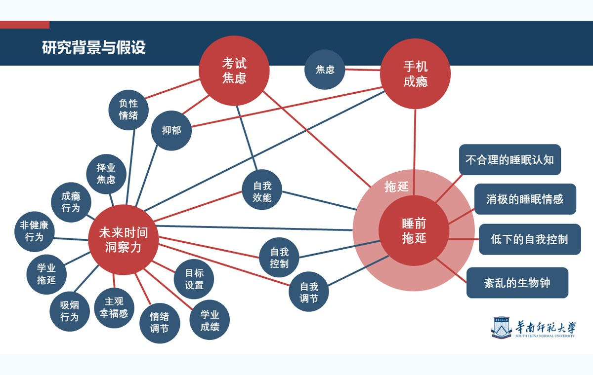

本科毕业啦 Created: June 3, 2024 · Undergraduate thesis notes 对定量研究更感兴趣，因而选择了问卷研究的方式作为本科的结束。选题一定程度上反映了大学生群体的真实现状，以下是答辩节选及论文正文。 未来时间洞察力与睡前拖延行为：考试焦虑和手机成瘾的链式中介作用  Selected thesis defense slide. Open thesis PDF Back to blog